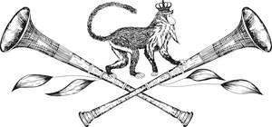
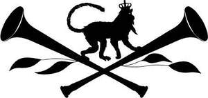

Trade Mark Journal No.2025/040 3 October 2025
UK00004268530 24 September 2025 (25)
Mark 1

Mark 2

- Class 25
- Sweatshirts; Hooded sweatshirts; Turtleneck shirts; V-neck sweaters; Turtleneck sweaters; Turtleneck pullovers; Short-sleeved T-shirts; Fleece pullovers; Hoodies; Hooded pullovers; Hooded sweat shirts; Corduroy shirts; Knit shirts; Fleece jackets; Knit jackets; Sweaters; T-shirts; Jeans; Sleeved jackets; Denim pants; Polo sweaters; Crew neck sweaters; Dress shirts; Quilted jackets [clothing]; Shirts; Denim jackets; Denim jeans; Embroidered clothing; Collared shirts; Blue jeans; Open-necked shirts; Pullovers; Corduroy trousers; Woven shirts; Printed t-shirts; Casual shirts; Cashmere clothing; Polo knit tops; Men's and women's jackets, coats, trousers, vests; Polo shirts; Overshirts; Jerseys [clothing]; Cardigans; Long sleeve pullovers; Suede jackets; Hooded tops; Tee-shirts; Knitted clothing; Jackets [clothing]; Denims [clothing]; Jumpers [sweaters]; Shorts; Chino pants; Knitwear [clothing]; Casual jackets; Footwear; Sneakers [footwear]; Trainers [footwear]; Footwear for women; Casual footwear; Shoes; Ladies' footwear; Slip-on shoes; Sneakers; High-heeled shoes; Leather shoes; Leisure shoes; Footwear for men and women; Deck shoes; Trousers; Casual trousers; Shorts [clothing]; Waistcoats; Waistcoats [vests]; Blouses; Dress shoes; Denim coats; Coats of denim; Shirts for suits; Knitwear; Woolen clothing; Outerwear; Silk clothing; Casualwear; Clothing; Long-sleeved shirts; Short-sleeved shirts; Short-sleeve shirts; Mock turtleneck shirts; Corduroy pants; Fleece tops; Polar fleece jackets; Vest tops; Turtlenecks; Sweatsuits; Sandals; Espadrilles; Pumps [footwear]; Shoes for casual wear; Ankle boots; Lace boots; Moccasins; Canvas shoes; Shoes for leisurewear; Clothes; Jackets; Safari jackets; Leather jackets; Rainproof jackets; Waterproof jackets; Windproof jackets; Padded jackets; Duffle coats; Duffel coats; Leather coats; Gilets.
Salthouse Boutique Limited